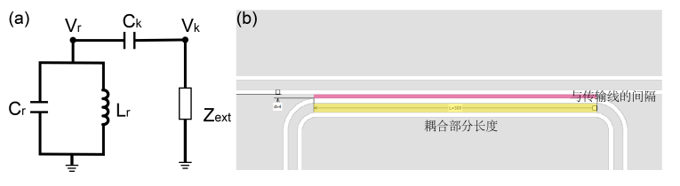

6. 品质因子¶
谐振腔的品质因子（Quality Factor）描述了谐振腔中能量储存与能量损失之间的比例关系。
\[
1/Q=1/Q_i+1/Q_e
\]
内部品质因子 \(Q_i\) 描述谐振子由于内部电阻引起的能量损耗，主要由材料和微纳加工工艺决定，在数值上远远高于外部品质因子，因子越高损耗越小。 从功率的角度来看，带内阻的并联 LCR 谐振电路：Qi=无功功率/有功功率，
\[ Q_i=\frac{P_{wu}}{P_{you}}=\frac{(V^2/Z_0)}{(V^2/R)}=\frac{R}{Z_0}=\omega_rRC \]在谐振状态下，电感和电容中的能量不随时间变化，贮存的能量与时间 t 无关，它不再与外界交换能量，而是稳定地储存在电路中。电阻上消耗的能量应由外电路不断地输入有功功率来补偿。
外部品质因子 \(Q_c\) 来源于谐振腔与外部传输线的耦合。

在上图中，体系存储的平均能量 \(C_rV_r^2/2\) 和能量耗散速率 \(V_k^2/2Z_{ext}\) 。由于在一般情况下耦合电容的容抗 \(Z_k=1/ω_rC_k\) 远大于传输线引起的外部阻抗 \(Z_{ext}\) ，所以，
\[ \frac{V_k}{Z_{ext}}=\frac{V_r-V_k}{Z_k}=\frac{V_r}{Z_k} \]从能量角度来看： \(Qe=2\pi \frac{存储的能量}{耗散速率*T}=\omega_r \frac{存储的能量}{耗散速率}\) ，（??? \(2\pi\)的出现存疑）
\[ Q_e=\omega_r\frac{C_rV_r^2/2}{V_k^2/2Z_{ext}}=\frac{C_r}{\omega_rC_k^2Z_{ext}} \]谐振腔的能量耗散主要来源于谐振腔与外部传输线的耦合，即外部品质因子的贡献。因此，谐振腔的能量耗散速率 \(\gamma=\omega_r/Q_e\)
通过高低功率测试，可以判断材料的品质和加工工艺。这是由于在高功率信号下测量样品，内部缺陷达到饱和，测量的 Qi 比低功率下要高，而 Qc 由电路参数决定，在高低功率下的结果没有很大差别。